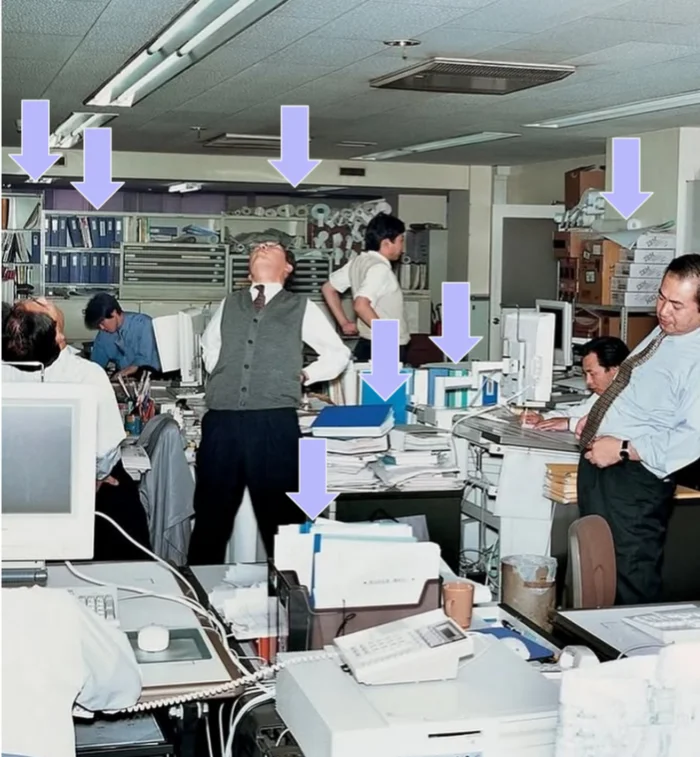
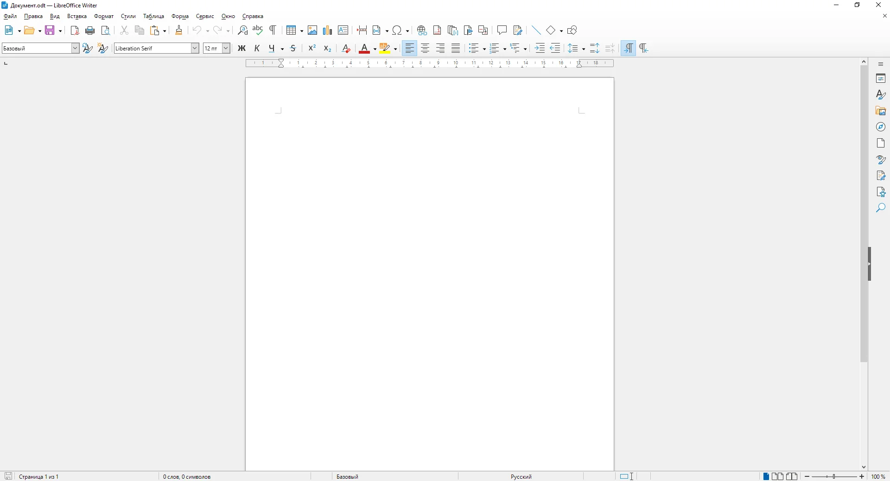

Stop pretending it's paper.
Why we built Docs — and why the blank page your software opens on has been lying to you since 1995.
Open a blank document and you're handed a page: margins, a ruler, a page break waiting to happen. None of it means anything on a screen. It's a costume — paper, worn by software that no longer has any reason to wear it.
Source: Nielsen study, conducted in Germany.
That's not a rounding error. That's a full working day, every week, spent formatting text instead of writing it — and the formatting still doesn't work.
Document = paper
Designers have a word for this: skeuomorphism — shaping a new thing to resemble the old thing it replaced, long after the reason for the resemblance is gone. It made sense in 1995: a document was a sheet of paper you hadn't printed yet. In 2026, almost nobody prints. The page survived. The reason for it didn't.


The excellent "Trapped in Microsoft Office" from IA.net puts it bluntly:
The office model embedded in Microsoft Office is hierarchical, paper-bound, and authority-driven. It assumes that thinking culminates in a formatted artifact. This model made sense in 1995. It does not make sense in 2026.
And office software doesn't have a monopoly on the word "document" either. A text document can be as plain as a .txt file — no margins, no ruler, no page count required. None of that fits what we actually need from a document today:
- Text that doesn't need formatting.
- Real-time collaboration between dozens of people.
- An AI assistant reading and writing alongside you.
A sheet of paper can't do any of that. So we stopped asking it to.
Writing is the job, not the interruption
Civil servants and office workers don't spend their days doing the work they were hired for. They spend it writing: emails, chat messages, AI prompts, and documents — office or not.
According to Asana's Anatomy of Work Global Index (2023–2025), employees spend 60% of their time on coordination — finding a file, chasing a colleague, checking which version is right — instead of the skilled work they're paid for. IDC puts a figure on the damage: lost files, outdated versions, and data-entry errors cost companies roughly 21% of total productivity.
The document isn't a minor detail. It's the job.
A decade-long transition
The private sector moved to collaborative tools — Google Workspace and friends — back in the 2010s. Government took a decade longer. What finally forced the shift wasn't strategy; it was Covid. Remote work made the old way of writing together impossible to ignore.
Office fights you at every turn
Editing text in office software is tedious by design: it optimizes for form over content, and it was never built for how we actually write together now. Here's where the friction really lives.
Too many buttons, not enough writing
An office worker spends around 23 hours a week in office applications — nearly three full workdays. Picking fonts, adjusting line spacing, redoing a layout: all of it form, none of it content.
One document, twelve names
Collaborating around text files is, itself, a source of friction. Offline collaboration between different parties quickly turns time-consuming and error-prone. Who hasn't ended up in an email thread with attachments whose file names betray exactly how many rounds of edits the text has survived — vF_VF70.docx, and worse?
Each employee loses 1 to 2 hours a week untangling misunderstandings caused by version chaos. And it's not just time: a study by Birnholtz and colleagues on tracked changes found that corrections shown without explanation are perceived as impolite, even aggressive. Writing is personal expression; an unexplained edit lands as a personal critique. Collaborative documents are now written at a scale of dozens, sometimes hundreds of people — and a tool built for one person at a desk was never going to hold that weight.
Built for a desk, not a life
Word, Excel, and PowerPoint files rely on OOXML, a format that stores the document as a zipped archive of interdependent XML files. Efficient for local use; a nightmare for online collaboration, since any simultaneous edit risks corrupting the relationships between the document's parts.
Office 365's real-time collaboration doesn't actually use this format at all. Opened online, the document is silently converted to a web-friendly intermediate format, merged on Microsoft's servers, then rebuilt back into OOXML once you're done. On mobile, that workaround shows: a reduced, degraded editing experience. Yet around 30% of document collaboration already happens with remote colleagues, and a third of the tools people use at work are personal tools their employer never provided. The need for mobility is already here. The tools just don't meet it.
What if it could be simpler?
Tired of getting lost between versions of the same document, discovering at the last minute a colleague edited your shared presentation, or burning an afternoon on a layout your manager will reject on sight? There's a simpler way to work — one that gives you back both time and sanity.
Fewer formatting options, more writing
Docs ships with fewer than 15 layout options. No font pickers, no line-spacing menus — just paragraphs, quotes, and headings, managed through shortcuts, plus tables, lists, videos, and photos when you need them. The document's block format lets you move any of it around freely, without risk.
To be fair, some documents genuinely need heavy formatting — a legal contract, a print-ready brochure, a slide deck for print. Keep Word or InDesign for those, no argument. But most of what actually crosses a desk doesn't: a memo, a spec, a status update, a decision log. For that majority, reaching for something light on formatting — Docs or otherwise — isn't a compromise. It's doing yourself a favor.
One document, one history
Every version of your document is kept — including the sentence you swore you deleted last week. Documents connect into a tree structure, so your writing interlinks and builds a living knowledge base instead of a pile of dead files. Share a template with a new hire once, and nothing ever gets buried in a forgotten folder again.
Built to be used anywhere
Docs is web-native from the ground up — no office format to convert, no syncing between a "file" version and an "online" version. Same experience on desktop, tablet, or phone. Comment on a word, a sentence, a paragraph; check the history to see exactly what changed and why. Real-time collaboration builds trust because everyone sees who's writing what, live. When work isn't synchronous, changes are proposed for approval instead of imposed. Private mode covers everything else.
When everyone works from the same source of information, collaboration becomes smoother and misunderstandings become rarer.
— XWiki, internal documentation
Conclusion
| Criteria | office software (legacy) | Docs |
|---|---|---|
| Formatting | Dozens of options, ~7h/week on layout, 50% of documents off-brand | Fewer than 15 options, content comes first |
| Versions | Duplicated files ("vF_final (2).docx"), 1–2h/week lost to mix-ups | A single document, full history preserved |
| Online collaboration | Format conversion required, risk of corruption on simultaneous edits | Web-native, real-time editing, no conversion |
| Mobility | Degraded editing experience on mobile | Same experience on desktop, tablet, or phone |
| Trust | Unilateral edits, corrections perceived as aggressive | Targeted comments, changes proposed for approval |
Given these well-documented pain points — lost time, non-compliance, version conflicts, trust issues — Docs isn't just "the same thing, simpler." Its core choices — fewer formatting options, a single history, native web editing — each answer a concrete problem office workers face every day.
Looking ahead
A bigger question sits beneath these everyday frictions: the question of the document itself. An office document is flat — a sequence of pages, designed for print. Knowledge doesn't work that way; it's built through links, cross-references, and hierarchies, closer to synapses than a linear list. That's the shift behind tools like Notion or Obsidian: no longer just storing information, but continuously connecting it.
Docs moves the same direction with sub-documents: a document can contain others, branch out, and form a living tree instead of a pile of isolated files. That turns a shared folder into an actual knowledge base — one you tend and grow — instead of a graveyard of "final version" files.
In an age of increasingly networked knowledge, can the A4 page — paper or not — still be the right standard for documenting our working lives?
What lies ahead with AI
Andrej Karpathy recently described a workflow that's become central to how he does research: he feeds an LLM raw source material — articles, papers, repos — and has it incrementally "compile" that material into a wiki of interlinked markdown files. He barely touches the wiki by hand anymore; the model writes it, maintains it, answers questions against it, and files its own outputs back in so the knowledge base keeps compounding. His conclusion:
I think there is room here for an incredible new product instead of a hacky collection of scripts.
— Andrej Karpathy
He's right — but look closely at what he actually built. It's personal. One researcher, one Obsidian vault, one model quietly compiling one person's folder of raw material into one person's wiki.
That's exactly the gap Guillaume Olivieri, co-founder of Perceptio, puts his finger on from the other direction. His argument: knowledge work was never really about documents. The real work happens in the interstices — in the standup comment explaining why an option got dropped, in the client call that becomes the actual rationale for a spec nobody wrote down. Organize work around discrete documents, and the why evaporates the moment the file is closed: a new hire asks why something is done a certain way, the answer is "it's in the wiki," and the wiki only ever recorded the what. His proposed alternative is what he calls a "contextual continuum" — a living context where every decision stays wired to its sources and reasoning, where contributions interleave instead of forking into fifteen copies of the same PRD, where organizational memory compounds instead of resetting with every new hire and every departure.
Put Karpathy's workflow next to Olivieri's diagnosis and the next frontier comes into focus. It isn't personal LLM knowledge bases — Karpathy already nailed retrieval and synthesis for an audience of one. It's collaborative ones. Nobody has yet solved that for a team: for the actual, messy, many-authored context a strategy, a product, or a policy is really built from.
That's the opening for Docs, and it isn't a coincidence. Docs already carries the plumbing an individual has to hand-roll with a raw folder and a pile of scripts:
- A tree that's already a wiki. Karpathy compiles a folder of markdown into categorized, cross-linked articles by hand-off to an LLM. Docs' sub-documents are that structure already — except several people build the tree together, live, instead of one person curating a private vault.
- Structured content, not a blob. Docs stores writing as blocks, not a flat .docx byte soup. That's exactly the shape a model wants to ingest, summarize, and re-file — no wrestling legacy formatting out of the way first.
- The "why," already captured. Olivieri's central complaint is that reasoning disappears the moment a decision hardens into a document. Docs' comments, pinned to a precise word or sentence, are exactly where that reasoning already lives — a model compiling the wiki doesn't need to reconstruct the why, it just needs to read it.
- Multi-author by default, with attribution intact. Real-time collaboration means Docs already tracks who wrote what, and when — the same trust mechanism a shared knowledge base needs the moment a model starts writing into it too: proposed edits, not silent overwrites, whoever — or whatever — the author is.
Picture Docs a few years out: every document you write feeds a shared base that a model is continuously compiling and re-linking — not a personal wiki you tend alone in Obsidian, but the collective one your whole team is already writing into just by doing its job. Ask three months later "why did we choose X over Y," and instead of fifteen versions of a PRD to dig through, you get an answer with the reasoning and the people behind it still attached. A senior hire leaves, and the organization doesn't lose five years of judgment with them, because that judgment was never trapped in one head, or one file — it was already woven into the context everyone shares.
That's the bet: not another AI feature bolted onto a document editor, but the first knowledge base built to be collaborative from day one — because the tool it grows out of already was.
The page was never the point. Knowledge was.
It's time our tools admitted that.
Ready to stop formatting and start writing?
No blank page. No ruler. No margins that mean nothing.